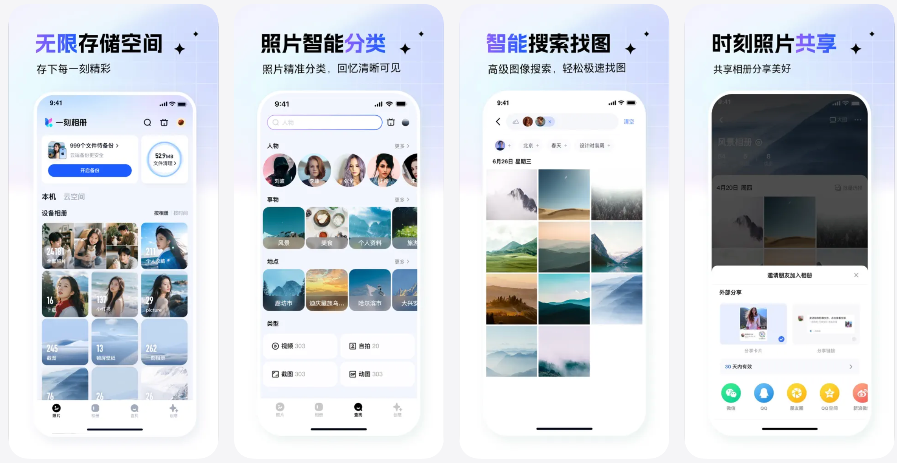
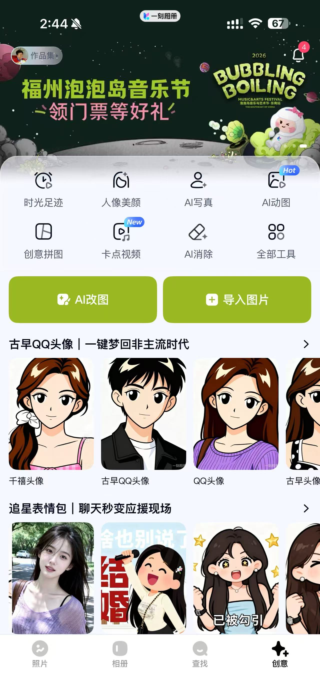
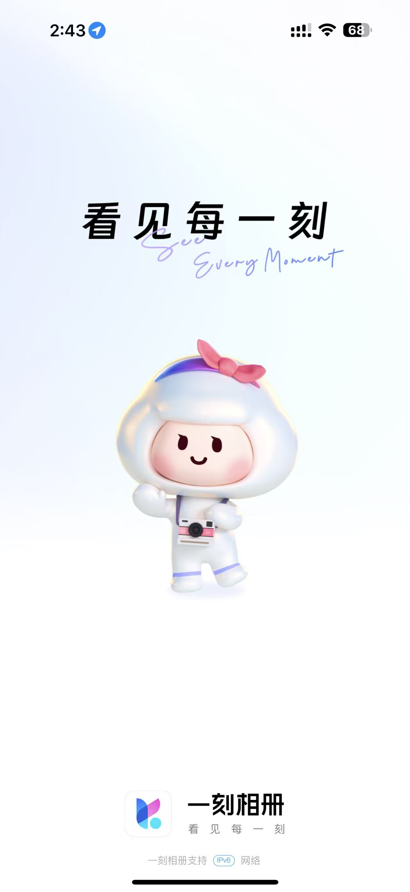
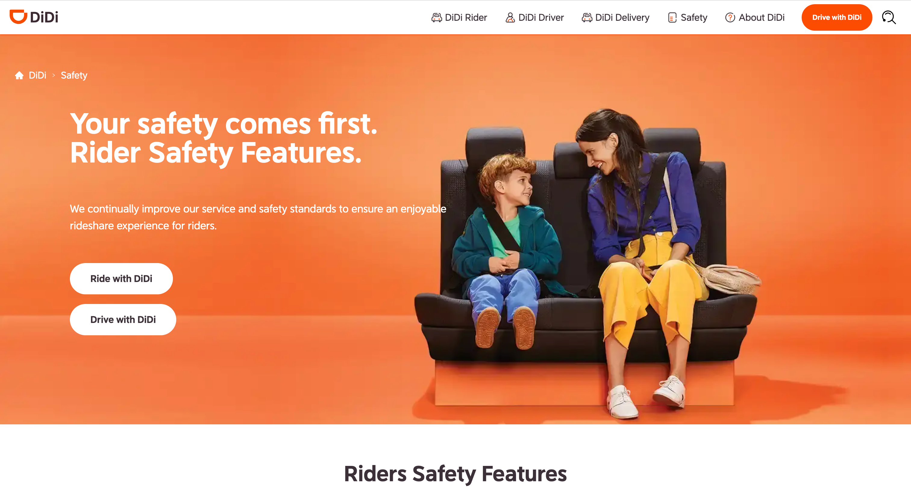
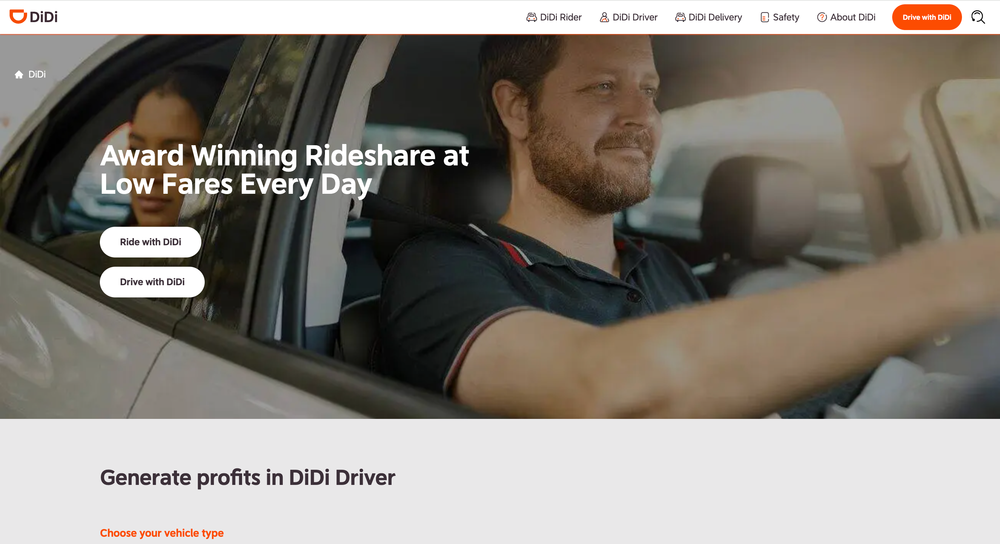
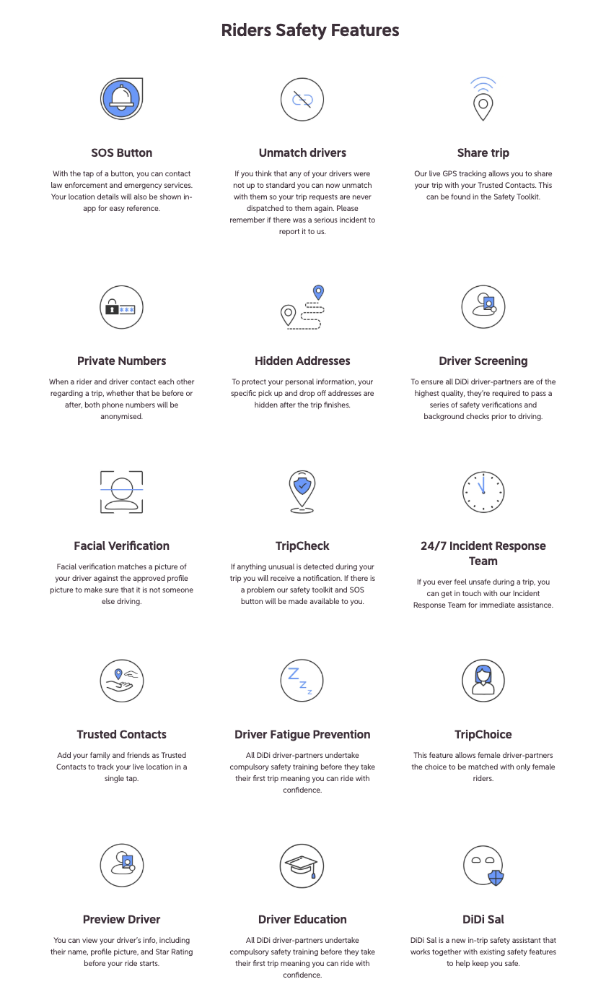
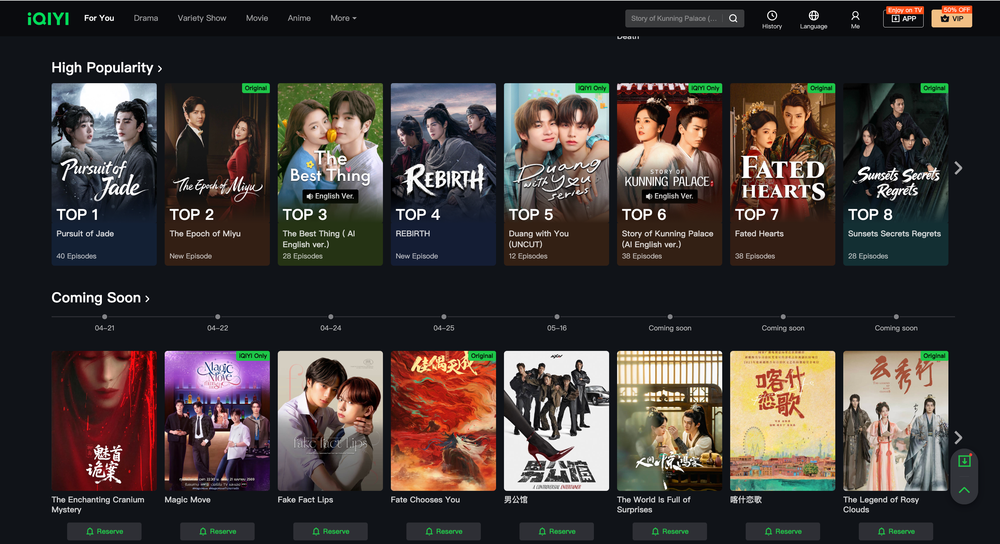
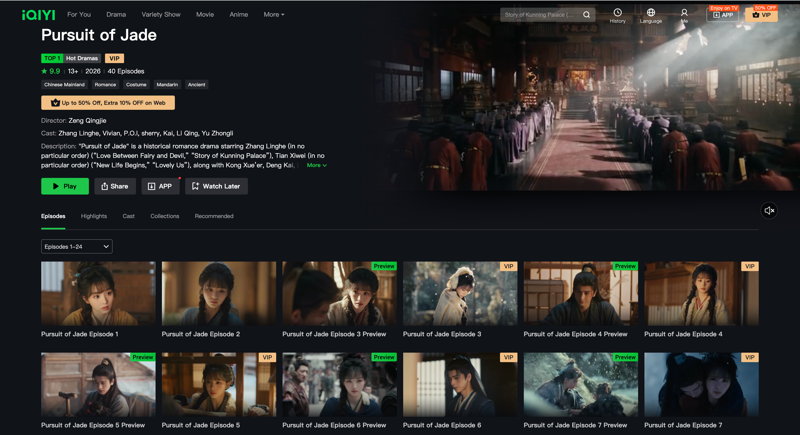
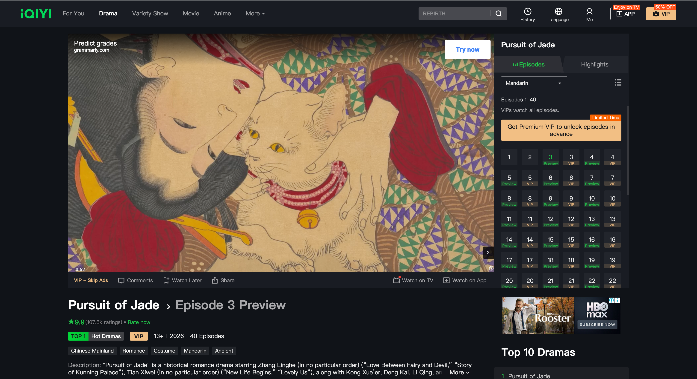

02 — Selected Projects
Work
6 projects · 2018–presentBaidu Yike Album — AI Feature Design
Baidu · Product Manager Intern
Designed a suite of six generative AI features for Baidu's flagship photo product: one-tap AI retouching, AI portrait generation, beat-sync video, creative collage, intelligent auto-captioning, and AI background replacement. Each feature required deep collaboration with algorithm engineers to balance model capability with consumer-facing experience.
Product Visuals

Yike Album — core product features including AI classification, smart search, and sharing

AI creation hub — AI portrait, beat-sync video, creative collage

Yike Album splash — "See Every Moment"
My Contribution
- Sole product intern responsible for full feature lifecycle: user research, competitive analysis, PRD writing, and engineering handoff
- Conducted user interviews to identify core needs, then aligned each feature's scope with the algorithm team's model capability boundary
- All 6 feature specs passed review and entered development; AI portrait and one-tap retouching listed as core Q1 launches
Reflection
This was my first time designing consumer-facing AI features where users directly judge the model with every tap. At DiDi, models operated invisibly inside risk systems; users never saw them. At Baidu, a single unsatisfying result is attributed to the product, not the model. The algorithm team measured success in precision and recall; I kept pulling the conversation back to whether users would come back. That tension surfaced in every review meeting. Over time I came to see it as a healthy friction: my value in an AI team is being the translator between model capability and user expectation.
AI
DiDi — AI In-Car Safety Strategy Product
DiDi Chuxing · AI Product Manager
Led end-to-end design and deployment of an AI-powered in-car safety system serving tens of millions of daily trips. Built a full-cycle risk framework spanning pre-trip identification, in-trip intervention, and post-trip resolution, coordinating 20+ NLP and computer vision models to detect verbal harassment, violence, and assault.
Product Context

DiDi Safety — rider safety features powered by the system I designed

DiDi global platform — tens of millions of daily trips

Safety feature system including TripCheck, facial verification, and SOS
My Contribution
- Sole AI PM on the project, responsible for full system design and final business metrics
- Extracted risk features via SQL analysis, collaborated with algorithm team to deploy 20+ NLP and vision models
- Designed the "pre-identify, in-trip intervene, post-trip resolve" strategy framework end-to-end
- Independently designed the case review platform: permission architecture, data visualisation, and audit workflow
- Results: 100+ incidents reduced daily / serious assault rate down 58% / proactive case detection up 125% / review efficiency up 65% / 6M CNY saved annually
Reflection
The three years I spent on safety products at DiDi were the most morally weighted of my career. A missed detection could mean a real assault going unnoticed. An over-trigger could unfairly penalise an innocent driver. This tension generated real disagreement within the team: the algorithm team wanted higher recall, operations worried about false-positive complaints, and I sat in the middle making decisions nobody was fully happy with. I came to understand that in this context, the product manager's role is not to find an answer everyone accepts, but to help the team make a judgement they can stand behind. That lesson shaped how I think about responsible design in complex systems.
iQIYI — Video Platform Redesign & Short Video
iQIYI · Product Manager
Led two major redesigns of iQIYI's core playback page serving 9 million daily active users, the design of an infinite short-video feed, and an interactive variety-show voting feature, rebuilding the content consumption journey from the ground up through behavioural data, A/B testing, and cross-functional delivery.
Product Visuals

iQIYI homepage — content discovery experience I helped redesign

Content grid — differentiated layouts by type

Video detail — episode list and playback UI

Playback page — redesigned consumption flow
My Contribution
- Led two full redesign cycles, the short-video feed, and the voting feature from concept through live launch
- Analysed click-through rates, watch time and scroll paths for 9M DAU, designing differentiated layouts by content type
- Drove standardised cross-team delivery across operations, design, and engineering
- Designed the voting feature's operator configuration system, enabling cross-content deployment with 60% faster dev cycles
- Results: VV per user +10% / retention +2.5% / short-video watch time +95% / voting login rate 83% (platform high)
Reflection
iQIYI's deepest lesson for me was the danger of intuition. I arrived with strong instincts about what to build, and the first A/B test came back pointing the exact opposite direction. That experience planted a permanent scepticism toward my own certainty. But the harder lesson came through cross-team work: operations wanted more exposure slots, design held for visual restraint, engineering pushed back on timeline. What I learned was not how to persuade everyone, but how to find the smallest testable version in the space of disagreement and let data carry the argument. That instinct (run it first, argue after) became the foundation of how I work.
BridgeClass — In-Class Comprehension Support for Non-Native Design Students
University of Sydney · IDEA9301 / DESN9201 · Client: Design@Sydney
Designing a three-phase digital support system addressing comprehension barriers faced by international students in fast-paced design tutorials. The system spans the full learning cycle: pre-class concept and terminology preparation, in-class real-time key-point tracking and task clarification (the core phase), and post-class knowledge mapping and self-assessment. Work in progress: concept validated, currently in prototype and early testing.
Pre-Class
Preparation
Background knowledge, key concepts, design terminology
In-Class · Core
Real-time Comprehension
Key-point visualisation, task clarification, live support
Post-Class
Review & Feedback
Knowledge maps, self-assessment, gap consolidation
My Contribution
- Conducted semi-structured interviews with MDES/MIDEA international students to locate the densest comprehension breakpoints
- Independently designed the three-phase system architecture based on the Universal Design for Learning (UDL) framework
- Completed Figma interaction prototypes for core modules and ran early usability tests
- Results: Early test participants reported noticeably reduced in-class comprehension anxiety. Concept validated. Iteration ongoing.
Reflection
I am the target user of this project. I have sat in a design tutorial, understood every word, and still not known what I was supposed to do. That experience is personal in a way that most product problems are not. Bringing that lived context into user research demanded a discipline I had not needed before: the ability to hold "I understand your situation" and "I must not assume you share my situation" simultaneously. Interviews surfaced experiences entirely unlike mine. This is still the hardest design tension I have worked with. The project is unfinished, and increasingly I think that incompleteness is instructive. Good strategic design resists the urge to close prematurely on solutions.
Focus Monitor — AI Attention Tracking Product
Personal Project · Launching on App Store
An independently designed real-time focus-monitoring product using computer vision to infer student attention from eye movement and head posture, paired with a fine-tuned Qwen-2.5-7B LLM delivering personalised study advice through natural dialogue. The system outputs visualised attention reports to help students identify fluctuation points and improve learning quality.
My Contribution
- Sole designer and product lead, responsible for user research, product definition, interaction design, and model strategy
- Decomposed attention into 4 key visual signals with weighted scoring to build a quantifiable attention index
- Designed SFT data fine-tuning strategy for Qwen-2.5-7B and LLM-as-a-Judge evaluation methodology
- Completed Figma interaction design for live monitoring, dialogue, and data visualisation modules
- Results: Full prototype and model strategy docs complete. Submitting to App Store for review.
Reflection
This is the first product I am taking to market entirely alone. Without a team, uncertainty cannot be distributed through division of labour; every decision sits with one person. That is uncomfortable in a productive way. It also brought into sharp focus a question I rarely had to answer seriously in corporate environments: is it ethical to continuously monitor someone's behaviour, even if the purpose is to help them? I have no clean answer. But I believe that a designer who has not wrestled seriously with this question should not build this kind of product. Preparing to launch has turned an abstract ethical concern into a concrete design decision I have to make and own.
Store
Multimodal Virtual Store Experience System
Personal Project
Independently designed and built a reusable AI content-production workflow for immersive virtual brand storytelling, integrating MidJourney, Runway, ChatGPT, and CapCut into a coherent end-to-end pipeline. Developed a structured cross-model prompt engineering framework enabling consistent, high-quality video output through brand variable substitution.
My Contribution
- Built the MidJourney → Runway → ChatGPT → CapCut production workflow from scratch
- Developed structured prompt engineering system (variable templates, style-locking, scene-alignment) to ensure cross-model consistency
- Sole author of the brand visual system and narrative script, ensuring image, video and copy cohered aesthetically and tonally
- Applied LLM-as-a-Judge methodology to evaluate output quality; produced reusable prompt template library
Reflection
Working as a creator rather than a product manager was a genuine identity shift. I am trained to validate decisions with data, but there is no clean metric for whether a visual tone is right. Working alone meant there was no team consensus to fall back on, no second opinion to absorb uncertainty. I had to develop a sense of aesthetic judgement as a professional skill, not a side effect of data analysis. Building the workflow also gave me a new understanding of what good system design means: not just making something run, but making something that people with different backgrounds can reliably reproduce. That insight later shaped how I think about the BridgeClass architecture.